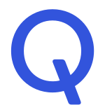

About Me
- I currently work on the Siri Attention and Invocation team at Apple. We're responsible for Siri features such as "Hey Siri" and "back-to-back requests". Our goal is to create natural conversation features that improve how users interact with Apple devices.
- I received my PhD from Indiana University, advised by Prof. Minje Kim as a member of the SAIGE research lab. I am also a proud alumni of the Electrical and Computer Engineering department at University of Illinois.
- My focus is on using deep learning for speech and music processing. My recent papers tackle personalization for speech enhancement systems, but overall I am interested in building fair resource-efficient acoustic models.
- I love teaching opportunities, and have helped facilitate courses such as Deep Learning Systems (ENGR-E 533), Machine Learning for Signal Proccessing (ENGR-E 511), and The Art of Web Programming (CS 498RK).
- In my spare time, I enjoy watching movies, sharing music, DJing, traveling, taking candid photographs, and playing video games (especially DDR or ITG).
Education
Indiana University, Bloomington, IN
PhD in Intelligent Systems Engineering
2017 Aug. – 2024 May
PhD in Intelligent Systems Engineering
2017 Aug. – 2024 May
University of Illinois, Urbana, IL
BS in Electrical Engineering
2011 Aug. – 2015 May
BS in Electrical Engineering
2011 Aug. – 2015 May
Employment
Full-Time
Apple, Seattle, WA
ML Engineer
2024 Aug. – Current
ML Engineer
2024 Aug. – Current

Qualcomm, San Diego, CA
Embedded Software Engineer
2015 Jul. – 2017 Aug.
Embedded Software Engineer
2015 Jul. – 2017 Aug.
Internships
Apple, Seattle, WA
AIML Resident
2023 Jul. – 2024 Jul.
AIML Resident
2023 Jul. – 2024 Jul.
Microsoft, Redmond, WA
Research Intern
2022 Summer
Research Intern
2022 Summer
Google, Cambridge, MA
Research Intern
2021 Summer
Research Intern
2021 Summer
X, Mountain View, CA
AI Resident
2020 Summer
AI Resident
2020 Summer
Spotify, Cambridge, MA
Research Scientist Intern
2019 Summer
Research Scientist Intern
2019 Summer
Amazon, Seattle, WA
Applied Scientist Intern
2018 Summer
Applied Scientist Intern
2018 Summer
Qualcomm, San Diego, CA
Software Engineer Intern
2014 Summer
Software Engineer Intern
2014 Summer
Viasat, Carlsbad, CA
Engineer Intern
2013 Summer
Engineer Intern
2013 Summer
Publications
International Journal Articles
- Aswin Sivaraman and Minje Kim, “Efficient Personalized Speech Enhancement through Self-Supervised Learning”, in IEEE Journal of Selected Topics in Signal Processing, 2022.
Refereed International Conference Proceedings
- Shruti Palaskar, Oggi Rudovic, Sameer Dharur, Florian Pesce, Gautam Krishna, Aswin Sivaraman, Jack Berkowitz, Ahmed Hussen Abdelaziz, Saurabh Adya, and Ahmed Tewfik, “Multimodal Large Language Models with Fusion Low Rank Adaptation for Device Directed Speech Detection”, in Proc. Annual Conference of the International Speech Communication Association (Interspeech), 2024.
- Anastasia Kuznetsova, Aswin Sivaraman, and Minje Kim, “The Potential of Neural Speech Synthesis-Based Data Augmentation for Personalized Speech Enhancement”, in Proc. IEEE International Conference on Acoustics, Speech and Signal Processing (ICASSP), 2023.
- Aswin Sivaraman, Scott Wisdom, Hakan Erdogan, and John R Hershey, “Adapting Speech Separation to Real-World Meetings Using Mixture Invariant Training”, in Proc. IEEE International Conference on Acoustics, Speech and Signal Processing (ICASSP), 2022. [audio demo]
- Aswin Sivaraman and Minje Kim, “Zero-Shot Personalized Speech Enhancement through Speaker-Informed Model Selection”, in Proc. IEEE Workshop on Applications of Signal Processing to Audio and Acoustics (WASPAA), 2021.
- Aswin Sivaraman, Sunwoo Kim, and Minje Kim, “Personalized Speech Enhancement through Self-Supervised Data Augmentation and Purification”, in Proc. Annual Conference of the International Speech Communication Association (Interspeech), 2021.
- Sravana Reddy, Yongze Yu, Aasish Pappu, Aswin Sivaraman, Rezvaneh Rezapour, and Rosie Jones, “Detecting Extraneous Content in Podcasts”, in Proc. 16th Conference of the European Chapter of the Association for Computational Linguistics (EACL), 2021.
- Aswin Sivaraman and Minje Kim, “Sparse Mixture of Local Experts for Efficient Speech Enhancement”, in Proc. Annual Conference of the International Speech Communication Association (Interspeech), 2020. [audio demo] [source code]
Workshops
- Aswin Sivaraman and Minje Kim, “Self-Supervised Learning from Contrastive Mixtures for Personalized Speech Enhancement”, in Neural Information Processing Systems (NeurIPS) Workshop on Self-Supervised Learning for Speech and Audio Processing, 2020. [audio demo] [slides] [source code]
Preprints
- Megan Wei, Mateusz Modrzejewski, Aswin Sivaraman, and Dorien Herremans, “Prevailing Research Areas for Music AI in the Era of Foundation Models”, arXiv preprint arXiv:2409.09378, 2024.
- Sanna Wager, George Tzanetakis, Cheng-i Wang, Lijiang Guo, Aswin Sivaraman, and Minje Kim, “Deep Autotuner: A Data-Driven Approach to Natural-Sounding Pitch Correction for Singing Voice in Karaoke Performances”, arXiv preprint arXiv:1902.00956, 2019.
- Sanna Wager, Lijiang Guo, Aswin Sivaraman, and Minje Kim, “A Data-Driven Approach to Smooth Pitch Correction for Singing Voice in Pop Music”, arXiv preprint arXiv:1805.02603, 2018.
- Kai Zhen, Aswin Sivaraman, Jongmo Sung, and Minje Kim, “On psychoacoustically weighted cost functions towards resource-efficient deep neural networks for speech denoising”, arXiv preprint arXiv:1801.09774, 2018.